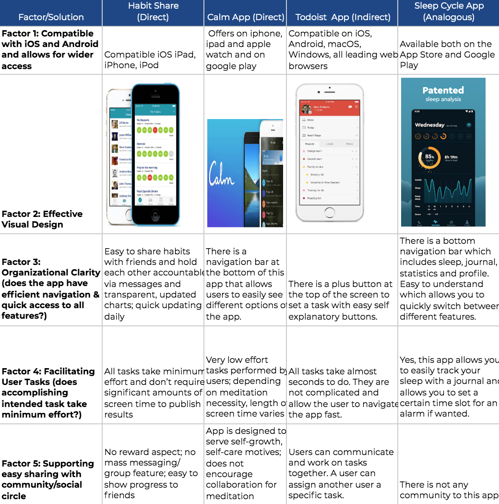
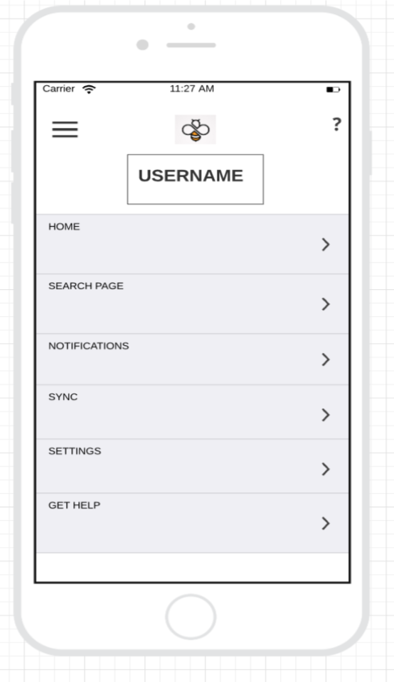
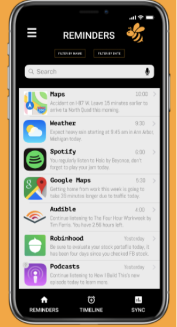
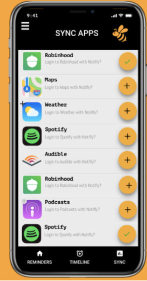
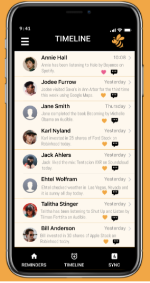

Notifly
SI 482: Notifly Application
Timeline: September 2019-December 2019
Location: Ann Arbor, MI
Project Context
NotiFly offers a simple and easy way for users to organize their regular daily activity reminders from popular apps in one interface without having to constantly access multiple apps. Users build a hub that allows them to keep track of their recent music, podcasts, traffic alerts, weather, etc. NotiFly builds a close-knit community that allows users to learn more about their friends and family's popular activities too.
Competitive Analysis
Personas & Scenarios
In order to determine the best scenario types we determined we wanted to cover our grounds by choosing personas from three different age groups: young college students (age 18), working moms (age 35), and lastly retired professionals (age 67). This allows us to test our prototype of an intelligent app that reminds people of their habits for all age types, since smartphones and the use of them have become a common practice. Since our app is an add on to existing applications in smartphones, the app will provide users with reminders of recurring tasks that they do such as checking the weather, traffic, listening to podcasts, music, or even checking vitals/health. This app acts as a reminder interface where users can see their friends activities along with their own and hold each other accountable. The personas were valuable in determining what the use cases for such an app would be from a focus on news, messaging family and friends for an older generation to busier working professionals interested in checking the latest news or traffic. The scenarios reflect the frustrations of our target audience and why they would use our app in the first place. We designed the scenarios to match the needs of people in those age ranges and outlining the problems, and the solutions they were looking for using this app we will offer.
Design Sketches & Storyboards
Storyboard for Amanda (Scenario 1):
Amanda Peters is very devoted to cooking dinner for her family. As a child, she grew up having a family dinner after the long work day for her parents. She watched her mother make delicious dinners and always wanted to follow in her footsteps. Now, at the age of 35, Amanda has two children of her own and works a corporate job in New York City where she commutes every morning. During her 45 minute commute home, she uses this time to look up recipes for her dinner. On days that she is exhausted, she tends to forget to prepare for dinner and stop at the supermarket on her way home. She is looking for a way to be reminded to find dinner recipes and stop at the grocery store on the way home.
Storyboard for Tyler (Scenario 2):
Tyler is a freshman at the University of Michigan and lives on North Campus. He has not completely adjusted to his surroundings and struggles to navigate around campus. He has been showing up late to his classes because he forgets to look at his class location and room number so he can better gauge the time required to get to the location. Today, he is walking to the Ross School of Business for a lecture from his dorm. He is looking for a way to be reminded of the bus schedule and routes so that he can coordinate both weather and travel time to get to class on time. Tyler needs one organized application that is compatible with his daily schedule.
Target Users
University Students
We are targeting avid smartphone users: university students age 17-25 who use various different apps from: investing, reading, music, social media, to traffic, weather, and calendars in order to schedule their entire days. This app provides them ease of use and functionality in one space and one app. This dashboard style application provides a one spot fits all model where students can access information and notifications without navigation 10+ apps in their busy lives.
Middle - Older Adults
This is a key group for us to target because it is a big way for us to simplify technology for those who may have not grown up with it. Here, by introducing a platform that unites all of these various different apps we are making it simpler for those who didn’t grow with the complicated features of technology to make use of their smartphones in one simple notification environment.
Basic Functionality
- Users can sync many different types of apps to Notifly dashboard
- Notifly’s homepage is the users reminders page which shows all of the different tasks one should complete in a day. The reminders page combines reminders from all different applications in one convenient and easy place
- Users can see what their friends are up to and have completed on the Timeline of Notifly
Design Evolution
Our first step to creating a design was making a paper prototype. Although this prototype was missing a lot of important information needed to successfully create the app, it gave us a starting point and allowed us to put or visualization to real life.
In our early sketches, we envisioned an app that acted like Venmo but for notifications instead of transactions. We played around with the idea of categorizing features instead of connecting apps from the user’s phone to NotiFly; we later realized that not all users might be interested in all of the categories. Through wireframing, we were able to firmly decide that our product would be a mobile application dedicated to nudging and reminding users of their pattern activity on their smartphones: focused on four key categories: weather, entertainment, maps, and messaging.
After that, we created a wireframe in which we were able to turn our black and white pictures into color and add more details. We used the website lucidchart which we were able to collaborate on. This was helpful as we were all able to work on different wireframes at once.
Final Design
Finally, after more user testing, we created our digital prototype using Figma. Figma was also a collaborative website where we were able to prototype our application easily. This application was the most beneficial to our project.
Our final digital prototype brought our idea to life. It was much more sophisticated and high level compared to the initial ideas we had in mind. Using feedback, we implemented simple features that could help our users accomplish tasks faster and more efficiently, without experiencing technical difficulties or limitations.
Reminders
Users can create reminders for app activities they want to track regularly.
Sync
Users can decide app permissions by only allowing Notifly to access and sync with certain applications.
Timeline
Users can join a community of friends + family to see common activities, interests, hobbies.
Digital Prototype
Click here to view the digital prototype.
Impact
NotiFly impacts people's lives by keeping them on task and organized throughout their daily activities. Users can eliminate the stress of switching from multiple interfaces to check apps like the weather, traffic alerts, and music, as they will now have all of the items on their to-do list in one place. Users also won’t forget to complete certain tasks, as NotiFly will remind them of items such as checking the traffic or weather report.
In addition, NotiFly allows people to become a part of a community, allowing them to see what their friends and family’s daily activities entail. For example, a friend may post about a new recipe they just discovered, allowing other users to then have access to it as well.